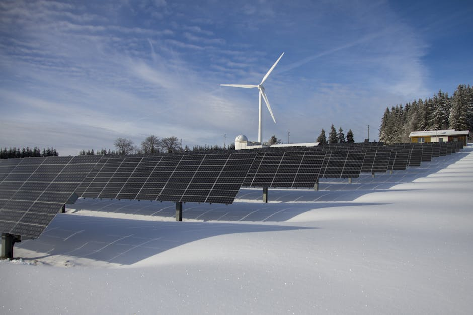

Ecuadorian Dataset on Access, Demand, & Availability of Electricity Supply

This project has created a web platform that centralises and visualises energy consumption and production data in Ecuador. It integrates historical and real-time information from official sources such as CENACE, CELEC and INAMHI. The platform presents this information in the form of graphs and heat maps. Additionally, a second application uses satellite images to predict incidents in the electrical system associated with meteorological variables. The project aimed to address a lack of data by making energy information more accessible and representative, enabling proactive management in the face of climatic events. Alongside the platform, the project involved measuring device consumption to improve energy efficiency, and the resulting dataset is publicly available to researchers and students.
Data characteristics
Currently, a dataset containing observations incorporating energy consumption and production data (MW/h), as well as meteorological information including temperature, precipitation and wind speed variables, is hosted on Hugging Face. This information is obtained from official sources and measuring devices. As the processed information is public, there are no related ethical issues; however, it is limited to what is shared by official sources.
Model characteristics
The model developed as part of this project is an incident prediction system designed to operate as an early warning system for Ecuador's electrical infrastructure. Specifically, it uses integrated satellite images and meteorological information from INAMHI, such as climatic variables like storms or strong winds, to anticipate possible failures or incidents in the electrical infrastructure associated with these weather conditions. This prediction system is a powerful tool for critical infrastructure planning and risk reduction, and is intended for future integration into the risk management systems of electricity sector companies. However, its main limitation is the availability of data from official sources, as it requires satellite images and meteorological information from INAMHI to operate.
How to use
The project model focuses on predicting incidents within Ecuador's electrical system by integrating consumption and production data with meteorological information (INAMHI) and satellite images to create an AI-driven early warning system. Key use cases include anticipating failures associated with extreme weather, providing in-depth analysis of energy consumption and production through visualisations such as heat maps, and managing energy efficiency at the device level. The main limitations identified were the ongoing challenge of integrating data from multiple official sources, and the need for additional funding to ensure the project's long-term sustainability. Plans to improve and scale up the project focus on integrating the predictive model into the risk management systems of electric utilities and expanding institutional collaboration with CENACE, CELEC and INAMHI to ensure the platform and public dataset are continuously updated.
Datasets
About
Powered by / Provided by: ESPOL University
Catalyzed by: Lacuna-Fund / Meridian (Climate-call) & FAIR Forward - AI for All, GIZ
Financed by: BMZ
Authors: Luisa Olaya
Contact: ESPOL University (jecordov@espol.edu.ec)